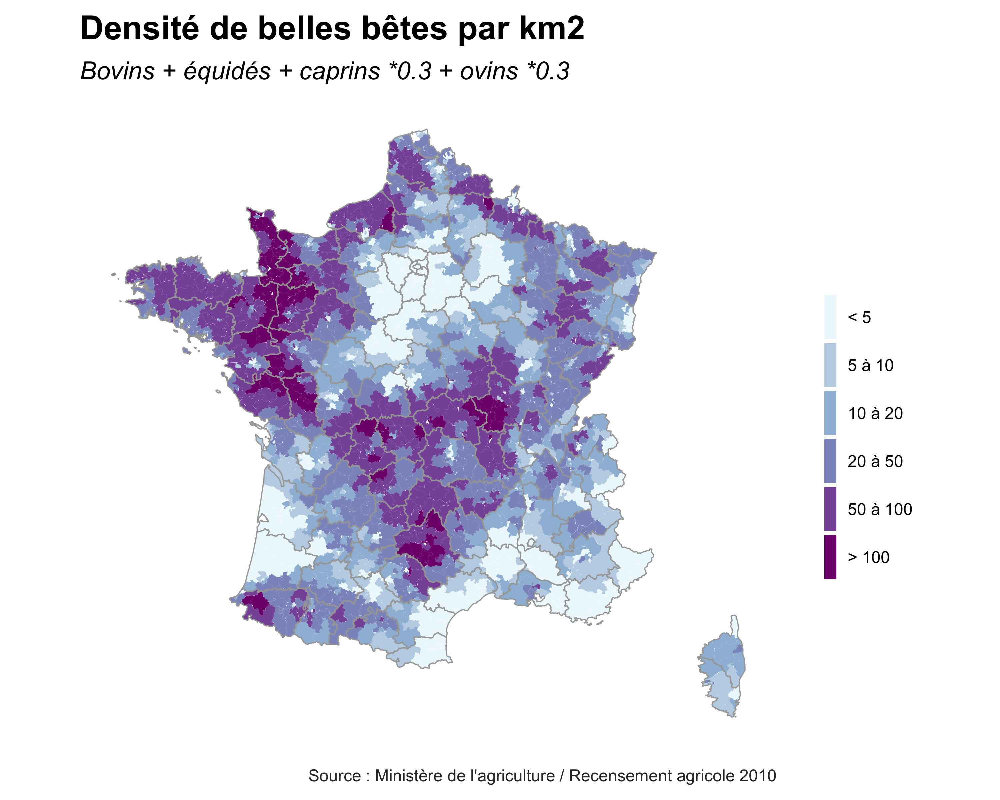
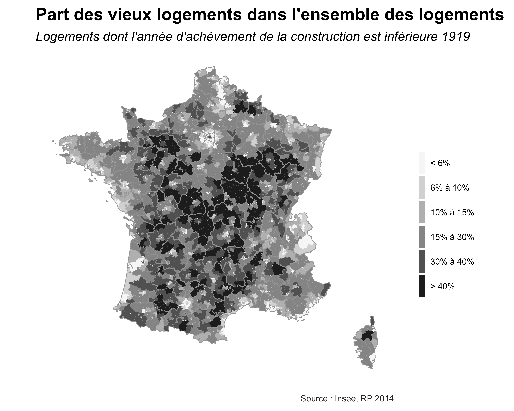
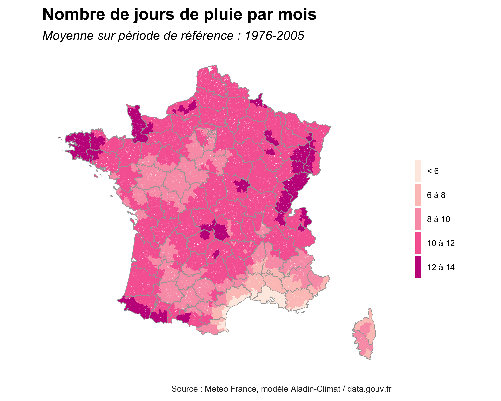
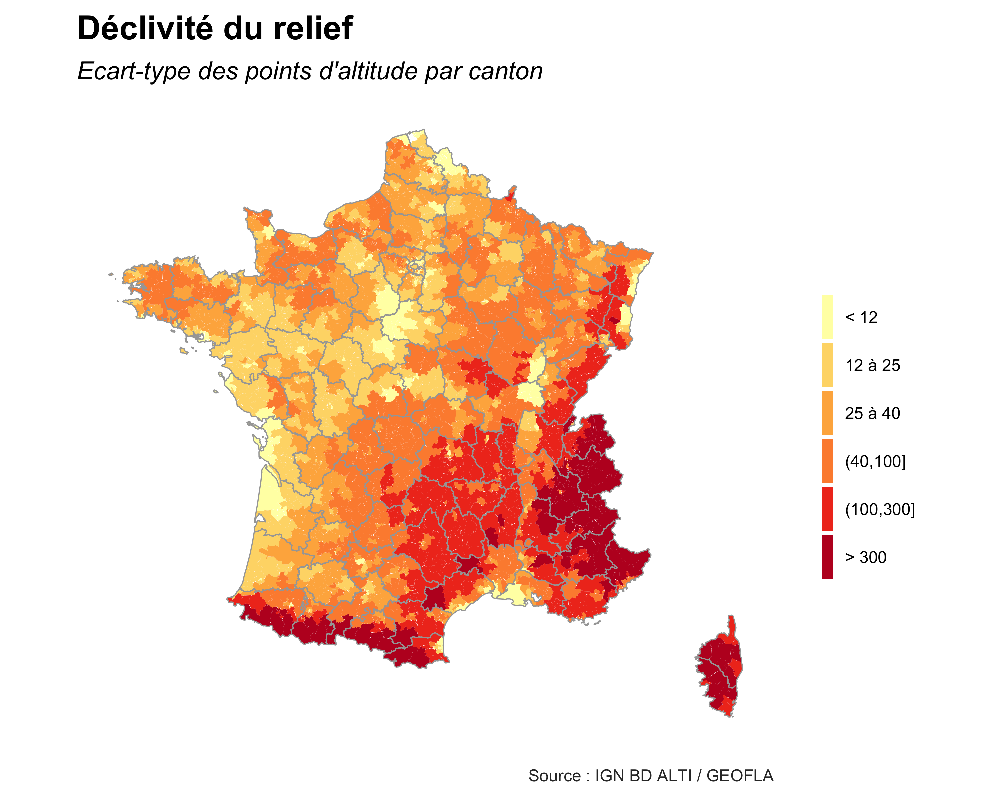
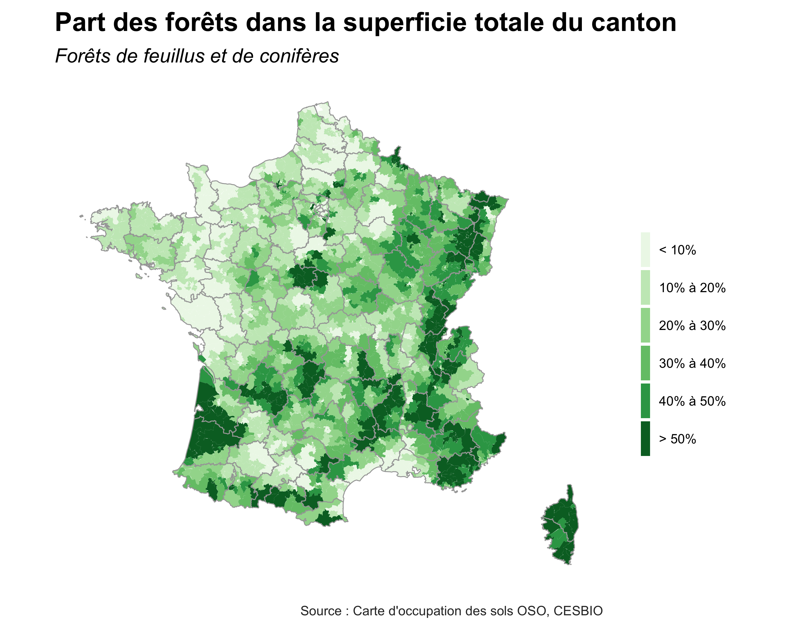

Parce que les ballades à la campagne sont cools mais que certains coins sont plus jolis que d’autres, j’ai essayé de quantifier cet intérêt purement esthétique à l’aide de plusieurs sources. On avait regardé :
- ici où il pleut le plus,
- là où les animaux d’élevage sont les plus nombreux,
- ou encore ici où le relief est plat.
On ajoute trois indicateurs complémentaires :
- la présence de vieilles pierres
- l’importance des forêts
- et des surfaces en eau
Pour accéder directement à l’application, c’est en bas de page.
Méthode et passage en revue des indicateurs
Les scripts pour produire les indicateurs et l’appli shiny sont dispos sur la page github du projet quanticampagnes (notamment le script ‘appli_data.R’ qui rassemble les données utilisées ici).
La maille choisie est le canton : il fleure bon le comice agricole et le tournoi de football des pupilles, bref ça sent la campagne. Logiquement on a sorti du périmètre de l’analyse les cantons densément peuplés d’après la grille de densité de l’Insee :
Pour chacun des 6 indicateurs, on répartit les 1700 cantons non-denses de France métropolitaine en 5 quantiles (les 20% de cantons avec le niveau le plus faible, les 20% suivants, etc…) pour les classer en 5 catégories (“très peu”, “peu”, etc…).
- Pour la densité de “belles bêtes”, j’ai simplifié l’analyse produite ici à partir des données du ministère de l’agriculture en totalisant le nombre de bovins, d’équidés, de caprins et d’ovins (ces deux-là avec un coefficient de 0,3 vue leur taille) et en le rapportant à la superficie du canton :

- Sous le terme de “vieilles pierres” on rassemble les logements construits avant 1919 d’après le fichier des logements du dernier recensement de l’Insee, et on le rapporte au nombre total de logements :

- Pour quantifier la fréquence de la pluie on repart des données de Météo-France utilisées ici pour afficher simplement le nombre de jours de pluie moyen par mois :

- Parce que le plat c’est terriblement emmerdant j’avais regardé ici quels coins éviter grâce à l’exploitation de la BD Alti de l’IGN. Ici on cartographie la même information, c’est à dire l’éacrt-type de l’altitude, mais au niveau des cantons :

- La présence des forêts est définie grâce à l’exploitation de la carte d’occupation des sols OSO réalisée par le Centre d’études spatiales de la biosphère (ça fait un peu rêver…), issues de photos satellites Sentinel-2 et Landsat-8 à 20 mètres de résolution et datant de 2016. Les surfaces couvertes par les catégories “forêts de feuillus” et “forêts de conifères” ont été aggrégées et rapportées à la superficie totale du canton :

- Enfin la présence de l’eau est le résultat des surfaces en eau repérérées d’après cette même carte d’occupation des sols, complétées par la surface située à moins de 50 mètres du trait de côte du littoral français produit par le SHOM (aka Service hydrographique et océanographique de la marine) :

application
Il suffit de jouer donc de jouer avec les filtres pour trouver son coin de campagne idéal. On peut aussi zoomer à l’aide de la loupe en haut à droite (patience la carte peut mettre quelques secondes à s’afficher)
Par défaut ce sont les critéres que j’ai choisi qui s’affichent à l’initialisation : une campagne avec des animaux dans les champs, des vieilles maisons, de la pluie pour de l’herbe bien grasse, des collines et quelques plans d’eau pour aèrer tout ça. Sans surprise je retrouve des coins que j’aime déjà (le Perche, les monts d’Arrée, le Pas-de-Calais, le Périgord, la Bourgogne, la Lorraine…) mais d’autres du même profil ont l’air bien sympas (les Vosges, le Béarn, les Ardennes…)